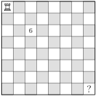
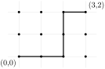
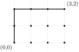
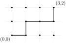
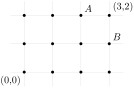
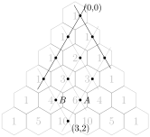

After completing this section, you should be able to do the following.
Use Pascal’s triangle to answer counting questions about lattice paths, bit strings, and subsets.
Explain how Pascal’s triangle is generated and how it relates to counting questions.
Explain why Pascal’s triangle is related to so many different types of counting problems.
SubsectionSection Preview
Investigate!
In chess, a rook can move only in straight lines (not diagonally). How many ways can the rook in the top-left corner travel to the bottom-right corner of the board, moving only down and to the right?

An 8x8 checkerboard containing an image of a rook chess piece in the top left corner. The square in the third row, third column contains the number 6.
Also, what does this have to do with counting how many pizzas you can order if you use half of the 14 available toppings?
Let’s find some of the numbers of paths that the rook can take to get to various squares in the chessboard.
1.
The 6 in the square in the 3rd row and column represents that there are 6 different paths to that square, even though there are only four squares the rook must move through to get there. One path is DDRR (down down right right). List all 6 paths.
2.
How many paths are there to the square in row 4, column 2 (diagonally down and to the left of the 6)? List out all the paths as D/R strings.
How many paths is this? That is, what number goes in that square of the chessboard?
3.
Now let’s find the paths to the square in row 4, column 3 (directly below the 6).
First, list all the paths that end with a R.
Next, list all the paths that end with a D.
Are there any other paths? In total, how many paths are there to this square?
4.
Continue filling in the chessboard, either counting D/R strings directly or using your observation from the previous task. What is the number in the lower right corner of the chessboard?
In 1653, Blaise Pascal, concerned with questions that would lay the foundation of probability theory, collected several facts about a triangular array of numbers in his Treatise on Arithmetical Triangle. This arrangement of numbers appeared as early as the 10th century in China, India, and Persia. The Chinese and Persian treatment of the triangle was in service of what we would now consider algebra: finding \(n\)th roots, essentially solving polynomial equations. The numbers in the triangle appear as solutions to counting problems in Indian texts: from six tastes, how many combinations of one, or two, or three,... can you make? European mathematicians in the 14th century presented the triangle as a table of figurate numbers (numbers that can be arranged in a geometric shape), which were themselves the centerpiece of the work of Pythagoras and his followers.
So what is this remarkable triangle that holds the secrets of so many different mathematical problems? Behold, Pascal’s triangle:
The first 17 rows of Pascal’s triangle. A triangular array of hexagons, each row containing one more hexagon that the row above it. In each hexagon is an integer: 1’s on the border of the triangle, and every integer inside the triangle the sum of the two integers above it.
Figure3.1.1.Pascal’s triangle
Spend some time gazing at the beauty of this triangle. What do you notice? What do you wonder? Look specifically at the 5th row (we call the 1 on the top row 0, so row 5 is 1, 5, 10, 10, 5, 1). How do the numbers in this row relate to the numbers above them? Notice that \(5 = 1+4\) and \(10 = 4+6\text{.}\) Does this occur anywhere else in the triangle?
Indeed, every number in the triangle is the sum of the two numbers above it. Let’s take this as our definition of Pascal’s triangle. We can then generate as many rows of the triangle as we like. It is this additive definition that was used in China and Persia to find \(n\)th roots, and we will briefly mention this use at the end of this section. However, we are interested in counting questions, so our main goal now is to observe how the numbers of Pascal’s triangle are answers to a variety of counting questions.
Here are some apparently different discrete objects we can count: lattice paths, bit strings, subsets, and pizzas. We will give an example of each type of counting problem (and say what these things even are). As we will see, the numbers in Pascal’s triangle are the answers to all of these questions.
Before we jump in, a little bit of notation. Let’s give each number in Pascal’s triangle a name, based on its position. Think of each number as being in a row and a column: rows are counted down, starting at 0, and columns are counted in from the left, also starting at 0. The entry in row \(n\) and column \(k\) will be denoted \(\binom{n}{k}\text{.}\) For example, the \(\binom{6}{3} = 20\text{,}\) since that is the value in row 6, column 3. For reasons that will become clear soon, we pronounce \(\binom{n}{k}\) as “\(n\) choose \(k\text{.}\)” We can rewrite the triangle with these names:
SubsectionLattice Paths
The integer lattice is the set of all points in the Cartesian plane for which both the \(x\) and \(y\) coordinates are integers. If you like to draw graphs on graph paper, the lattice is the set of all the intersections of the grid lines.
A lattice path is one of the shortest possible paths connecting two points on the lattice, moving only horizontally and vertically. For example, here are three possible lattice paths from the point \((0,0)\) to \((3,2)\text{:}\)



Notice to ensure the path is the shortest possible, each move must be either to the right or up. Additionally, in this case, no matter what path we take we must make three steps right and two steps up. No matter what order we make these steps, there will always be five steps. Thus each path has length five.
The counting question we will ask is this: how many lattice paths are there between \((0,0)\) and \((3,2)\text{?}\) In this case, drawing all the paths wouldn’t take too long. Or we could list each path as a string of “directions” such as \(xxyyx\text{,}\)\(yyxxx\text{,}\) or \(xyxxy\text{,}\) which correspond to the three paths drawn above, where an \(x\) means travel one unit in the \(x\) direction, and similarly for \(y\text{.}\) We would get the following ten paths:
When the distance between starting and stopping points is larger, we will want to find a more efficient way to count the paths.
Let’s take what we learned from the rook paths (which are, gasp, actually lattice paths). Consider the lattice shown below:

Any lattice path from (0,0) to (3,2) must pass through exactly one of \(A\) and \(B\text{.}\) The point \(A\) is 4 steps away from (0,0) and two of them are in the \(x\) direction. The last step is also in the \(x\) direction, so the paths from (0,0) to (3,2) that pass through \(A\) are exactly the six strings we listed above that end in an \(x\text{.}\) For the paths that pass through point \(B\text{,}\) the last step will be in the \(y\) direction, so the paths from (0,0) to (3,2) that pass through \(B\) are exactly the four strings we listed above that end in a \(y\text{.}\) So the total number of paths to (3,2) is just \(6+4\text{.}\)
The general observation here is that to find the number of paths that start at \((0,0)\) and end at \((m,n)\text{,}\) we can find the number of paths to the point directly to the left of the endpoint, \((m-1,n)\) and add the number of paths to the point directly below the endpoint, \((m,n-1)\text{.}\) This is exactly the same way that Pascal’s triangle is generated! Indeed, if we rotate the lattice appropriately, so the point \((0,0)\) is at the top of the triangle and the axes along the sides of the triangle, we see that the numbers in Pascal’s triangle give us exactly the number of paths to each lattice point.

To make this observation helpful for actually finding the number of paths from the origin to a given point, we note that it is the length of the path that determines the row of Pascal’s triangle, and the number of steps in the \(y\) direction that says how far into the triangle we are -- the column of Pascal’s triangle.
Example3.1.2.
How many lattice paths are there from \((0,0)\) to \((4,7)\text{?}\)
Solution.
The length of these paths is \(4+7 = 11\text{.}\) Look at the 11th row of Pascal’s triangle:
Count to the 7th position (remembering that the 1 is in position 0) give us \(\binom{11}{7} = 330\) different paths.
SubsectionBit Strings
“Bit” is short for “binary digit,” so a bit string is a string of binary digits. The binary digits are simply the numbers 0 and 1. All of the following are bit strings:
The number of bits (0’s or 1’s) in the string is the length of the string; the strings above have lengths 4, 1, 4, and 10 respectively. We also can ask how many of the bits are 1’s. The number of 1’s in a bit string is the weight of the string; the weights of the above strings are 2, 0, 4, and 5 respectively.
Definition3.1.3.Bit Strings.
An \(n\)-bit string is a bit string of length \(n\text{.}\) That is, it is a string containing \(n\) symbols, each of which is a bit, either 0 or 1.
The weight of a bit string is the number of 1’s in it.
\(\B^n_k\) is the set of all \(n\)-bit strings of weight \(k\text{.}\)
For example, the elements of the set \(\B^3_2\) are the bit strings 011, 101, and 110. Those are the only strings containing three bits exactly two of which are 1’s.
The counting questions: How many 5-bit strings have weight 3? In other words, we are asking for the cardinality \(|\B^5_3|\text{.}\)
Great. Ten of them. Actually, I have a confession: I didn’t type all of these from scratch. Instead I just modified the list of 10 lattice paths from (0,0) to (3,2) that we found earlier. Each \(x\) became a 1 and each \(y\) became a 0. After all, any lattice path with length \(n\) that requires \(k\) steps in the \(x\) direction can be represented by a string of \(n\) symbols of two types, with \(k\) of those symbols being of one type. Whether we call the two symbols \(x\) and \(y\) or we call them \(1\) and \(0\) will not change how many strings we get.
It is not surprising then that the same relationship between Pascal’s triangle and lattice paths holds for bit strings. Look at the 10 strings above. The first row contains all the bit strings of \(\B^5_3\) that end in a 0. Before that ending 0, we have a string in \(\B^4_3\text{,}\) since it must have length 4 and weight 3 (the ending 0 increases the length, but not the weight). The second row contains all the bit strings of \(\B^5_3\) that end in a 1. Before that ending 1, we have a string in \(\B^4_2\text{,}\) since it must have length 4 and weight 2 (the ending 1 increases the length and the weight). So the number of 5-bit strings of weight 3 is the sum of the number of 4-bit strings of weight 3 and the number of 4-bit strings of weight 2. In symbols:
Now we have two good reasons to believe that Pascal’s triangle tells us the number of bit strings of a given weight: there is a one-to-one correspondence between lattice paths and bit strings, and the same recursive relationship holds for bit strings as it does for generating Pascal’s triangle. So we can now use the triangle to count bit strings.
Example3.1.4.
How many 11-bit strings have weight 5?
Solution.
There will be \(\binom{11}{5}\) such strings. From Pascal’s triangle, we see that \(\binom{11}{5} = 462\)
SubsectionSubsets and Pizzas
A subset of a set \(A\) is any set all of whose elements are also in \(A\text{.}\) Think of starting with the set \(A\) and removing some (or none or all) of its elements: the resulting set is a subset of \(A\text{.}\) (More information about sets can be found in Section 0.2 and Section 5.1.)
Suppose we look at the set \(A = \{1,2,3,4,5\}\text{.}\) How many subsets of \(A\) contain exactly 3 elements? Let’s list them all:
Again, we see there are ten. In fact, we have listed them in the same order as we listed the ten 5-bit strings of weight 3 and the ten lattice paths from (0,0) to (3,2). Wait, does this even make sense? In what way is a subset the same as a bit-string?
Think of each bit in a bit string as representing one of the elements in a set. The set \(A\) has five elements, so we need five bits to represent a subset of \(A\text{.}\) If the bit in position \(n\) is a 0, that means we do not include \(n\) in our subset, while a 1 in that position tells us that \(n\) is in the subset. Three 1’s means we have said, “yes” to three elements.
Example3.1.5.
Which subsets of \(\{1,2,3,4,5,6\}\) correspond to the bit strings below?
Here we are not fixing the weight of the strings, so our subsets will not all have the same size. Here is the correspondence:
\(101011\)
\(\{1,3,4,6\}\)
\(001000\)
\(\{3\}\)
\(111111\)
\(\{1,2,3,4,5,6\}\)
\(000000\)
\(\emptyset\)
The last subset is the empty set: the set that contains no elements (we could have also written \(\{\}\)). This is a subset of every set!
Remark3.1.6.
What we have done here is give a bijection between the set of 5-bit strings of weight 3 and the set of 3-element subsets of \(A\text{.}\) A bijection is a function \(f: X \to Y\) such that each element of \(Y\) is the image of exactly one element from \(X\text{.}\) You can prove that if there is a bijection between two sets, then they have the same number of elements. This is a common counting technique we will use in the upcoming sections.
This example illustrates that once again, Pascal’s triangle can give us the answer to a counting question. The number of \(k\)-element subsets of a set with \(n\) elements is the same as the number of \(n\)-bit strings of weight \(k\text{,}\) and that is the number in row \(n\text{,}\) column \(k\) of the triangle: \(\binom{n}{k}\text{.}\)
Example3.1.7.
How many subsets of the set \(\{a,b,c,d,e,f,g\}\) exactly 4 elements?
Solution.
The set contains 7 elements, so the number of 4-element subsets is the same as the number of 7-bit strings of weight 4, namely \(\binom{7}{4} = 35\text{.}\)
At this point I’m sure we are all getting pretty hungry, so let’s get some pizza. But which pizza shall we order? Let’s not overdo it and just choose three toppings from the ten available. How many different pizzas can we order?
Aha! So that’s why we care about counting subsets!! Each pizza choice is nothing more than a 3-element subset of the set of 10 toppings. We now know how to count this: \(\binom{10}{3} = 120\) different pizzas.
What if we want an Italian soda with dinner? Let’s say we want to add two different flavored syrups from the 13 available. How many different sodas are possible? This is just the number of 2-element subsets of a set with 13 elements: \(\binom{13}{2} = 78\text{.}\)
This is why we pronounce \(\binom{n}{k}\) as “\(n\) choose \(k\)”. It is the number of ways to choose \(k\) items from a collection of \(n\) items, since choosing \(k\) elements is exactly how you build a \(k\)-element subset.
We can view counting lattice paths as choosing \(k\) out of \(n\) things: of the \(n\) steps on the path, we choose \(k\) of them to be in the \(x\) direction. Bit strings can also be thought of in this way: of the \(n\) bits in the string, we choose \(k\) of them to be 1’s.
We can now answer all sorts of real-world counting problems, as long as they are really nothing more than asking for the number of subsets of a set. Pascal’s triangle contains all these answers.
Counting Subsets.
The number of \(k\)-element subsets of a set with \(n\) elements is the number in row \(n\text{,}\) column \(k\) of Pascal’s triangle: \(\binom{n}{k}\text{,}\) which we read as “\(n\) choose \(k\text{.}\)” This is the number of ways to choose \(k\) items from a collection of \(n\) items.
SubsectionAlgebra?
Earlier we said that one of the original uses for Pascal’s triangle was to solve problems in algebra. What does counting subsets (or bit strings or lattice paths) have to do with algebra?
Suppose you expand the binomial expression \((x+1)^6\) (i.e., multiply the binomial \(x+1\) by itself six times). This can be tedious to do by hand, but a computer algebra system such as SageMath can do this easily.
Do the coefficients look familiar? Consider the 6th row of Pascal’s triangle:
This means we must distribute the binomials, which looks like the following. (We will use a different typeface for each version of the \(x\) and \(y\) to keep track of where everything comes from.)
This repeated distribution results in a sum of terms, each the product of three variables. We see that each term is the result of choosing either the \(x\) or the \(y\) from each of the binomials. For example, the term \(x\y\X\) is the result of choosing the \(x\) from the first binomial, the \(\y\) from the second, and the \(\X\) from the third.
When we collect like terms, to find the coefficient for the \(x^2y\) term, for example, we collect all the terms in which we have chosen \(x\) two times (and \(y\) the other one time). Alternatively, the \(x^2y\) term comes from all the strings with two \(x\) and one \(y\text{,}\) just like a bit string or lattice path. No matter how you think of it, the result is that we have \(\binom{3}{2} = 3\) terms with the form \(x^2y\text{.}\)
Hopefully it is clear that this generalizes to the expansion of \((x+y)^n\) for any positive integer \(n\text{.}\) This is known as the Binomial Theorem.
Theorem3.1.9.Binomial Theorem.
The \(n\)th row of Pascal’s triangle gives the coefficients of the expansion of \((x+y)^n\text{.}\) That is, for any positive integer \(n\text{,}\)
Why is the number of lattice paths from \((0,0)\) to \((3,5)\) the same as the number of \(8\)-bit strings with weight 5?
2.
Which of the following counting questions have the answer \(\binom{11}{5}\text{?}\) Select all that apply.
How many lattice paths are there from \((0,0)\) to \((11,5)\text{?}\)
Careful, paths from \((0,0)\) to \((11,5)\) will have length \(11+5 = 16\text{,}\) so the answer to this question would be \(\binom{16}{5}\text{.}\)
How many subsets of \(\{1,2,\ldots, 11\}\) contain exactly 5 elements?
Correct. We must choose 5 out of 11 elements.
How many 11-bit strings have weight 5?
Exactly. Of the 11 bits in the string, we must choose 5 to be 1’s.
How many ways can you select 5 flavors of ice cream for a giant sundae from 11 available flavors?
Yes. This is the same as choosing 5 elements from a set of 11.
3.
The number of subsets of \(\{1,2,\ldots, 8\}\) of size 3 is the same as the number of subsets of \(\{1,2,\ldots, 7\}\) of size either \(2\) or \(3\text{.}\) Explain why this makes sense.
4.
What questions do you have after reading this section? Write at least one question about the content of this section that you are curious about.
ExercisesPractice Problems
1.
Use Pascal’s triangle to find the numeric values of the following.
\(\displaystyle \binom{7}{2}\)
\(\displaystyle \binom{7}{3}\)
\(\displaystyle \binom{8}{3}\)
\(\displaystyle \binom{10}{5}\)
\(\displaystyle \binom{8}{7}\)
\(\displaystyle \binom{13}{2}\)
2.
Compute the following sums of the rows of Pascal’s triangle.
Now based on your work in the above calculations, give a guess for the sum of the 14th row of Pascal’s triangle.
3.
Consider the lattice paths from (3,4) to (8,10).
How long is each such path?
How many steps are in the x-direction?
How many different paths are there?
4.
How many lattice paths are there from \((a,b)\) to \((c,d)\text{?}\) Give your answer as a binomial coefficient, so \(\binom{n}{k}\text{,}\) but say what \(n\) and \(k\) are.
5.
Consider the bit string \(100110010\text{.}\)
What is the length of the bit string?
What is the weight of the bit string?
How many bit strings (including this one) have the same length of weight as it?
6.
Consider the set \(\mathbf{B}^8_3\) of 8-bit strings of weight 3.
How many 1s are there in each bit-string? . How many 0s are there in each bit-string? .
How many bit strings are there in the set?
How many 8-bit strings of weight 5 are there?
7.
Suppose you are ordering a calzone from D.P. Dough. You want 5 distinct toppings, chosen from their list of 12 vegetarian toppings.
How many choices do you have for your calzone?
How many choices do you have for your calzone if you refuse to have green pepper as one of your toppings?
How many choices do you have for your calzone if you insist on having green pepper as one of your toppings?
How do the three questions above relate to each other? Do you see why this makes sense?
8.
How many subsets of \(\{1,2,3,4,5,6,7,8\}\) have six elements?
Of those, how many contain the number 1?
Of the total number of 6-element subsets, how many do NOT contain the number 1?
9.
What is the coefficient of \(x^{9}\) in \((x+3)^{17}\text{?}\)
10.
What is the coefficient of \(x^{8}\) in the expansion of \((x+2)^{17} + x^4(x+3)^{18}\text{?}\)
ExercisesAdditional Exercises
1.
How many lattice paths are there from \((0,0)\) to \((8,3)\text{.}\) How many lattice paths are there from \((0,0)\) to \((3,8)\text{?}\) Why does it make sense that these two numbers are the same? Explain your reasoning.
2.
Suppose you are counting lattice paths from \((0,0)\) to \((4,3)\text{.}\) We know that the number of such paths is \(\binom{4+3}{4} = \binom{7}{6} = 35\text{.}\) Here is another way to count these paths: consider the cases for where your first step in the \(y\)-direction is. There are five different options here; compute the number of paths for each case.
(a)
How many paths are there from \((0,0)\) to \((4,3)\) where the first step is in the \(y\)-direction (i.e., paths that pass through the point \((0,1)\))?
(b)
How many paths are there from \((0,0)\) to \((4,3)\) that first move one step in the \(x\)-direction, then one step in the \(y\)-direction (so they pass through the points \((1,0)\) and then \((1,1)\))?
(c)
List the remaining three cases and how many paths there are for each case.
(d)
Verify that the sum of the paths in each case is 35. Then describe where all these numbers are in Pascal’s triangle. Find another instance of this pattern and verify that it works.
3.
Explain why the coefficient of \(x^5y^3\) the same as the coefficient of \(x^3y^5\) in the expansion of \((x+y)^8\text{?}\)
4.
Consider the expansion of \((x+y)^5\text{.}\)
(a)
Use the Binomial Theorem to write out the expansion of \((x+y)^5\text{.}\)
(b)
Using the expanded version of \((x+y)^5\text{,}\) multiply (using the distributive property) \((x+y)^5\cdot (x+y)\text{.}\) Simplify your answer, but show all your steps.
(c)
How does your previous answer relate to what you get when you apply the Binomial Theorem to \((x+y)^6\text{?}\)